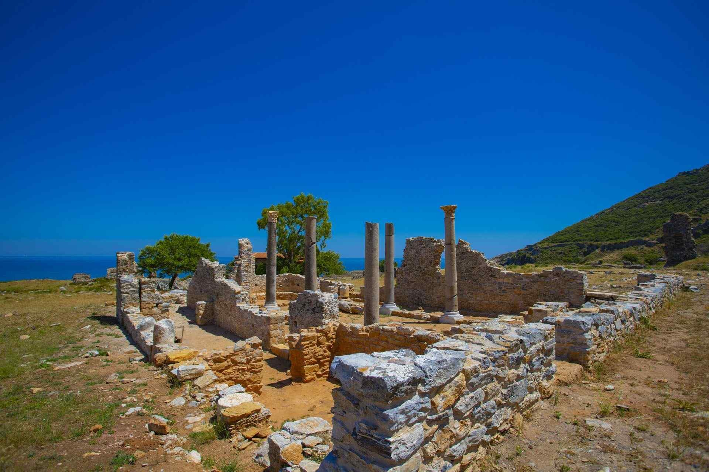

|  |
Anemurium Antik Kenti; Antik Çağ’da Dağlık Kilikya Bölgesi’nin (Kilikia Tracheia/Aspera) batı bölümünde yer alan önemli önemli liman yerleşimlerinden birisidir. Günümüzde ise Mersin İli, Anamur İlçesi, Ören/Batıkent Mahallesi sınırları içerisinde kalan kent, Anamur ilçe merkezine 10 km uzaklıktadır. Bulunduğu konumu gereği Doğu Akdeniz deniz ticaret yolu güzergahında yer alan kent aynı zamanda Anadolu’nun iç bölgelerinde yer alan yerleşimlerin denize erişimini sağlamaktaydı.Bu sebeple de özellikle Roma İmparatorluk ve Bizans Dönemi boyunca stratejik bir konuma ve öneme sahipti. Bu süreçte Anamur Ovası’nın ana yerleşimi olan Anemurium, söz konusu ova için bir pazar ve idari merkez, aynı zamanda Kıbrıs’a olan yakınlığı sebebiyle de bir ticaret merkezi olmuştur.
Kente ait kalıntılar, günümüzde Sultansuyu Çayı’nın Akdeniz ile birleştiği noktanın yaklaşık 1.5 km güneybatısında yer almaktadır. Anemurium’u batıda sınırlayan dağlık arazi, güneybatıda Akdeniz’e çıkıntı yapmaktadır. Öyle ki bu nokta Türkiye’nin Akdeniz’e uzantı yapan en güney ucu olup “Anamur Burnu” olarak bilinmektedir. Antik kentin kapsadığı alan ise Anamur Burnu’nun çevresi ve kuzeyindeki dağlık arazinin doğu yamacından ve eğimin azaldığı düzlük sahadan başlayıp Sultansuyu Çayı’na kadar uzanmaktadır.Kentte halen çatısına kadar ayakta olan birçok yapı ve yapı kalıntısını görebilmek mümkündür. Sarp ve tepelik bir arazi üzerine kurulan akropole (yukarı şehir) ait kalıntılar, antik kentin güney ucunda, denize doğru çıkıntı yapan, oldukça yüksek ve çevreye hakim burun kısmında yer almaktadır. Burası aynı zamanda “Anamur Burnu” olarak da adlandırılmaktadır.
Akropolde; Hellenistik ve Orta Çağ’a ait sur duvarlarının yanı sıra birçok yapı kalıntısı (olasılıkla sarnıç, hamam, kilise vb.) bulunmaktadır. Aşağı Şehir olarak adlandırabileceğimiz kuzey bölümde sahile yakın düzlükte ise kentin görkemli kamusal yapıları bulunmaktadır.
|